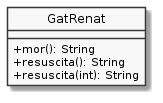

Exercici 04_10. En Renat és assessinable¶
Exercici 04_10. En Renat és assessinable¶
Context
Carpeta de lliurament:
04_10_assessinable/Continguts relacionats: Classes i objectes
Com lliurar-lo: instruccions
[✓] Exercici amb autoavaluació
Enunciat
Si et passa com a mi, a hores d’ara t’hauràs encarinyant amb el gat Renat. Però no a tothom li passa. De fet, hi ha qui li pot interessar que el nostre estimat amic l’espitxi. Per exemple, imagina’t que el fan servir com a personatge d’un joc en el que pugui anar perdent vides.
Ara per ara, la implementació que tenim (considera la darrera) ens obliga a fer el següent per treure-li
una vida a una instància de GatRenat:
renat.setVides(renat.getVides() - 1);
No seria molt més fàcil de llegir el següent?
renat.mor();
Doncs per aquí va el tema que et toca implementar en aquest exercici.

Afegeix al gat Renat els següents mètodes:
String mor(): li treu una vida si encara és viu i retorna el lamentable lament"auch"quan, un cop perduda una vida, encara és viu. En canvi, si en treure-li la vida ja no li queden més, retorna el més definitiu"ximpún". Finalment, si ja estava mort del tot, retornarà un silenci en forma de punts suspensius"...".String resuscita(): quan en Renat està mort, li afegeix una vida i retorna un crit d’alegria"guai!". Si no estava mort, però, retorna el típic silenci de punts suspensius"...".String resuscita(int): fa el mateix queresuscita()però en aquesta ocasió se li pot indicar el nombre de vides amb les que torna a la vida. Si el nombre de vides indicat és menor que un, retornarà el silenci típic.
Prova les noves funcionalitats amb la següent versió de UsaGatRenat:
/*
* Mata el gat Renat 3 cops
* - el primers amb totes les vides
* - el segon amb una sola vida
* - el tercer amb dos vides
* Després de matar-lo "del tot" prova un altre cop… per si de cas
* Finalment el gat Renat acaba tenint tres vides però no les
* pot aprofitar gaire pequè el programa s'acaba.
*/
public class UsaGatRenat {
public static void main(String[] args) {
GatRenat renat = new GatRenat();
for (int vides = 1; vides <= 3; vides++) {
while (renat.estaViu()) {
System.out.println("Renat diu: " + renat.mor());
}
System.out.println("Renat diu: " + renat.mor()); // per rematar-ho!
System.out.println("Renat diu: " + renat.resuscita(vides));
}
}
}
Això generarà la següent sortida:
$ java UsaGatRenat
Renat diu: auch
Renat diu: auch
Renat diu: auch
Renat diu: auch
Renat diu: auch
Renat diu: auch
Renat diu: ximpún
Renat diu: ...
Renat diu: guai!
Renat diu: ximpún
Renat diu: ...
Renat diu: guai!
Renat diu: auch
Renat diu: ximpún
Renat diu: ...
Renat diu: guai!
Una mica de culturilla POO¶
Java ens ofereix la possibilitat de definir mètodes amb el mateix nom, sempre i quant els paràmetres siguin diferents. A aquest fenomen se li sol conèixer com sobrecàrrega (overload).
Així, el nom resuscita() estaria sobrecarregat a GatRenat.